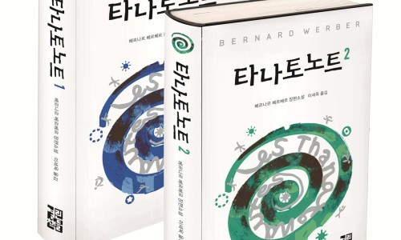
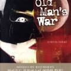
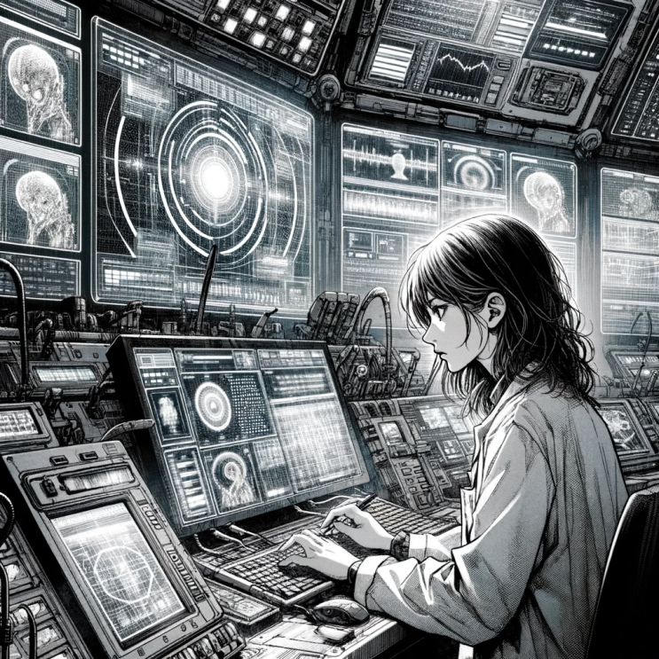
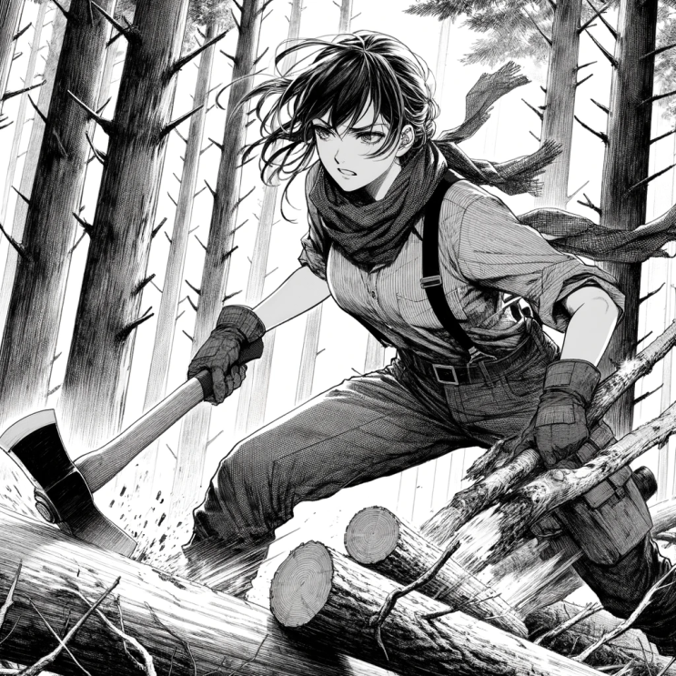

![[서평] 삼체 1부 (류츠신) 이미지 1](../../assets/images/note-48/p285-01.jpg)
우리 문명은 이미 자신의 문제를 해결할 능력을 잃었습니다
삼체1- 삼체문제 중이름만 들어보았던 삼체, 친구가 추천을 해서 읽어보았다.
결과는 대박.
442페이지 책을 어제 저녁 8시부터 읽기 시작해서 새벽 2시 반까지 다 읽고 잤다. 허허허 이렇게 밤 새워서 SF소설을 한번에 다 읽어 보기는 어릴적 타나토노트와 노인의 전쟁 이후로 정말 오래간만인 듯.
나에게 아직 이런 체력이 남아있다뉘!

타나토노트 세트 - 예스24 [개미]라는 소설로 일약 천재 작가라는 호칭을 얻은 베르나르 베르베르. 그가 내놓은 또 하나의 흥미 진진한 대작 [타나토 노트]는 인류의 영원한 의문인 죽음의 신비를 벗기는 공상 과학 소설로, 과학적 지식과 끝없는 상상의 세계를 베르베르 특유의 백과 사전식 ...
www.yes24.com

노인의 전쟁 - 예스24 가장 지구적이고, 가장 인간적이고, 가장 미국적인 SF 멜로소설SF의 거장 로버트 하인라인을 잇는 존 스칼지의 첫 장편소 설 `많은 SF 작가가 많든 적든 로버트 하인라인의 전통을 잇고 있지만, 스칼지의 놀라우리만큼 능란한 첫 소설은 고인이 된거장이 쓴 작품처...
www.yes24.com
스토리는 주인공이 연달아 죽거나 자살하는 과학자들이 왜 이런지 이유를 찾아가면서 시작된다.
주인공이 사건을 추리해나가는 와중에 과거 문화대혁명 속에 있었던 광기의 역사와 이로 인해 인생이 파괴된 여성의 삶이 소개되고 동시에 극한의 세계에서 사는 외계인의 수없이 건설되고 파괴된 역사가 인류의 역사를 은유로 하여 소개된다.
그리고 그 와중에 벌어지는 음모.
가장 기억나는 장면중 하나는 다음이다.
[외계에서 지구의 메시지에 보낸 회신] 이 세계가 당신들의 정보를 받았다.
나는 이 세계의 평화주의자다. 내가 먼저 당신들의 정보를 수신한 것은 행운이다. 경고한다. 대답하지 마라! 대답하지 마라! 대답하지 마라!
당신들의 방향에는 1000만 개의 항성이 있다. 대답하지 않으면 이 세계는 송신원의 위치를 파악할 수 없다.
하지만 대답을 하면 송신원 위치가 파악되어 당신들의 행성계는 침략당하고 당신들의 세계는 점령당할 것이다!
대답하지 마라! 대답하지 마라! 대답하지 마라!
위 장면이 마침 니튜브에 있어서 올려봄.
아래는 내년에 나오는 삼체 넷플릭스 버전의 예고편 영상.
예고편 보니 책 스토리 다 나오네 ㅋㅋㅋㅋ
내년 넷플 버전 나오기 전엔 중드 버전을 보고 있어야 겠다.
와 내년이 정말 기대된다!

삼체 여주를 GPT로 생성해 보았다

열심히 벌목 하고 있는 여주 소장 가치 : 10점 만점에 7점 드립니다!